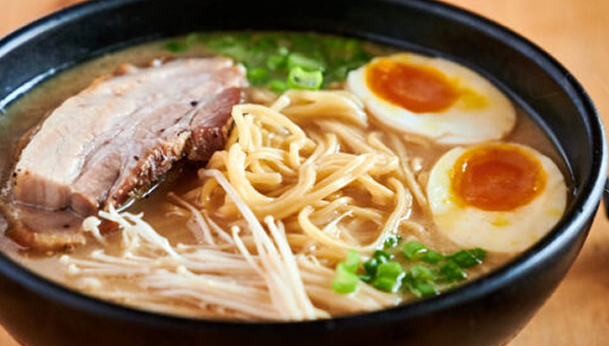
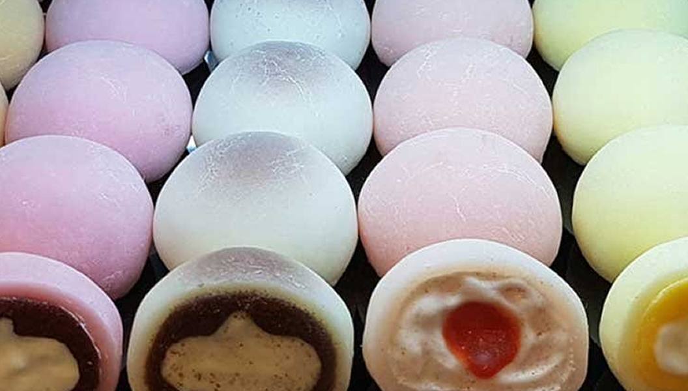

This metropolis is a feast for the senses. Neighborhoods like Ginza and Akihabara buzz with flashing lights and larger-than-life shopping, while Meiji Jingu Shrine and the Tokyo Imperial Palace give you a look into Japan's storied past. There are also number of green spaces like Shinjuku Gyoen National Garden, which acts as a place to escape from the chaotic concrete jungle. What's more,Tokyo is regularly regarded as a top foodie city thanks in part to its abundant Michelin-starred restaurants
Travelers most interested in Japan's history and traditions should head to Kyoto. Centrally located on the archipelago, Kyoto has long been considered the cultural capital of Japan. Here, you'll find more than 1,500 Buddhist temples and around 400 Shinto shrines (you can't miss the Kiyomizu-dera Temple and Fushimi Inari Taisha), including a whopping 17 UNESCO World Heritage sites. You can also stroll through geisha districts like Gion and Miyagawacho, admire classic wooden architecture and visit traditional teahouses before checking out more modern attractions, such as the Kyoto Aquarium
More than 160 islands comprise Okinawa, a top destination for snorkeling and diving. The Japanese prefecture boasts proximity to multiple coral reefs teeming with fish, manta rays and hammerhead sharks that you can access from beautiful beaches like those found on Okinawa's Kerama Islands. These 30-plus islands are also ideal places to see migrating whales between January and March. Back on the main island, visitors will find one of the world's largest aquariums, several castle ruins and a museum that focuses on Okinawa's unique history and culture.